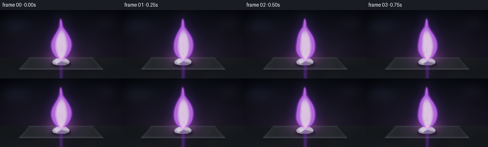
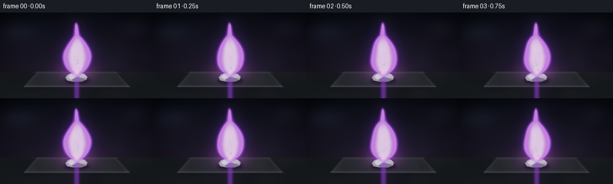
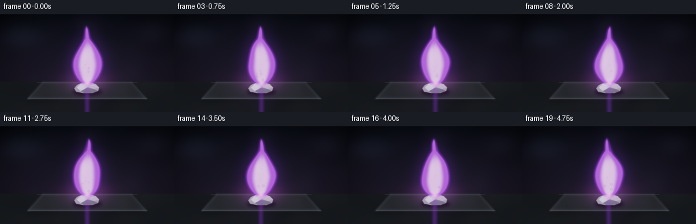
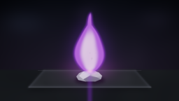
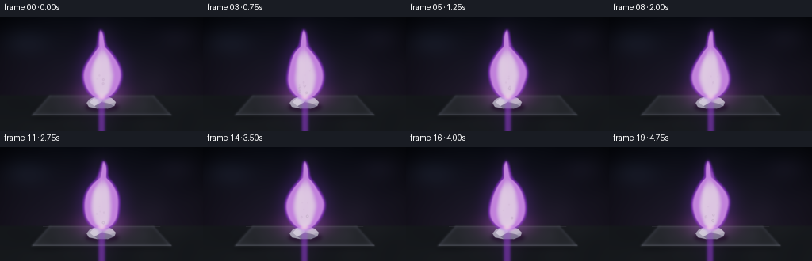

CODING AGENTS AS PIXEL WORLD MODELS
traex/DeepSeek-V4.1-Flash · phygen_130
点击播放 · 原生 RGB 像素
逐轮保存的候选
回放视频、检查图与代码变化。
每份候选均可单独播放。实际图片检查记录在下方工具轨迹中。
候选 01播放与检查图
点击播放 · 原生 RGB 像素


展开代码变化
--- 上一保存版本
+++ 本次保存版本
@@ -0,0 +1,318 @@
+from __future__ import annotations
+
+from pathlib import Path
+
+import cv2
+import numpy as np
+from PIL import Image, ImageDraw, ImageFilter
+from scipy.ndimage import gaussian_filter
+
+import artifact_io
+
+
+W, H = 256, 144
+FPS = 4
+FRAMES = 20
+S = 4
+WS, HS = W * S, H * S
+
+
+def smoothstep(a: float, b: float, x: np.ndarray | float) -> np.ndarray:
+ t = np.clip((x - a) / (b - a), 0.0, 1.0)
+ return t * t * (3.0 - 2.0 * t)
+
+
+def resize_float(image: np.ndarray, shape: tuple[int, int]) -> np.ndarray:
+ return cv2.resize(image.astype(np.float32), (shape[1], shape[0]), interpolation=cv2.INTER_CUBIC)
+
+
+def value_noise(seed: int, size: tuple[int, int] = (72, 128), sigma: float = 5.0) -> np.ndarray:
+ rng = np.random.default_rng(seed)
+ field = gaussian_filter(rng.normal(size=size).astype(np.float32), sigma=sigma, mode="reflect")
+ field -= field.min()
+ field /= max(float(field.max()), 1e-6)
+ return resize_float(field, (HS, WS))
+
+
+NOISE_A = value_noise(41)
+NOISE_B = value_noise(73, sigma=7.0)
+NOISE_C = value_noise(109, sigma=3.0)
+
+
+def make_background() -> np.ndarray:
+ yy, xx = np.mgrid[0:HS, 0:WS].astype(np.float32)
+ x = xx / WS
+ y = yy / HS
+
+ top = np.array([0.020, 0.026, 0.045], dtype=np.float32)
+ mid = np.array([0.060, 0.050, 0.085], dtype=np.float32)
+ low = np.array([0.080, 0.060, 0.070], dtype=np.float32)
+ image = np.empty((HS, WS, 3), dtype=np.float32)
+ blend = np.clip(y / 0.72, 0.0, 1.0)[..., None]
+ image[:] = top
+ image *= 1.0 - blend
+ image += mid * blend
+ image *= 0.88 + 0.12 * np.clip((y - 0.7) / 0.3, 0.0, 1.0)[..., None]
+
+ # Soft out-of-focus lab lights and a restrained vertical wall gradient.
+ for cx, cy, radius, strength, color in [
+ (0.12, 0.22, 0.20, 0.11, (0.18, 0.23, 0.34)),
+ (0.88, 0.18, 0.17, 0.08, (0.20, 0.17, 0.29)),
+ (0.74, 0.55, 0.23, 0.035, (0.16, 0.12, 0.20)),
+ ]:
+ r2 = ((x - cx) / radius) ** 2 + ((y - cy) / radius) ** 2
+ halo = np.exp(-2.8 * r2)[..., None]
+ image += halo * np.array(color, dtype=np.float32) * strength
+
+ image += (NOISE_A[..., None] - 0.5) * 0.006
+ vignette = np.clip(1.0 - 0.54 * (((x - 0.5) / 0.62) ** 2 + ((y - 0.52) / 0.68) ** 2), 0.36, 1.0)
+ image *= vignette[..., None]
+
+ # Matte bench top with a faint horizon.
+ surface = smoothstep(0.675, 0.705, y)
+ surface_color = np.array([0.038, 0.043, 0.050], dtype=np.float32)
+ grain = (NOISE_B[..., None] - 0.5) * 0.012
+ image = image * (1.0 - surface[..., None]) + (surface_color + grain) * surface[..., None]
+
+ # A shallow graphite laboratory tray gives the sample a readable base.
+ tray = np.zeros((HS, WS), dtype=np.float32)
+ tray_poly = np.array(
+ [
+ [62 * S, 99 * S],
+ [194 * S, 99 * S],
+ [217 * S, 125 * S],
+ [39 * S, 125 * S],
+ ],
+ dtype=np.int32,
+ )
+ cv2.fillPoly(tray, [tray_poly], 1.0)
+ tray = gaussian_filter(tray, 1.2 * S)
+ tray_shadow = gaussian_filter(np.roll(tray, 3 * S, axis=0), 4.0 * S)
+ image *= 1.0 - 0.32 * tray_shadow[..., None]
+
+ tray_fill = np.array([0.075, 0.082, 0.092], dtype=np.float32)
+ tray_texture = 0.82 + 0.18 * NOISE_C[..., None]
+ image = image * (1.0 - 0.92 * tray[..., None]) + tray_fill * tray_texture * (0.92 * tray[..., None])
+
+ edge = np.clip(gaussian_filter(tray, 0.8 * S) - gaussian_filter(tray, 2.1 * S), 0.0, 1.0)
+ image += edge[..., None] * np.array([0.22, 0.20, 0.26], dtype=np.float32) * 0.35
+ rim = np.clip(gaussian_filter(tray, 0.65 * S) - gaussian_filter(tray, 1.5 * S), 0.0, 1.0)
+ image += rim[..., None] * np.array([0.10, 0.12, 0.16], dtype=np.float32)
+
+ # Front lip and a thin reflected highlight along the polished tray.
+ cv2.line(image, (41 * S, 124 * S), (216 * S, 124 * S), (0.20, 0.21, 0.24), max(1, int(0.55 * S)))
+ cv2.line(image, (54 * S, 100 * S), (202 * S, 100 * S), (0.18, 0.17, 0.20), max(1, int(0.35 * S)))
+ return np.clip(image, 0.0, 1.0)
+
+
+def render_potassium(image: np.ndarray, t: float) -> np.ndarray:
+ layer = Image.new("RGBA", (WS, HS), (0, 0, 0, 0))
+ draw = ImageDraw.Draw(layer)
+
+ # Contact shadow and the soft, slightly slumped silhouette of the metal.
+ shadow = Image.new("RGBA", (WS, HS), (0, 0, 0, 0))
+ sd = ImageDraw.Draw(shadow)
+ sd.ellipse((107 * S, 108 * S, 150 * S, 120 * S), fill=(0, 0, 0, 190))
+ shadow = shadow.filter(ImageFilter.GaussianBlur(2.2 * S))
+ layer.alpha_composite(shadow)
+
+ body = [
+ (109 * S, 109 * S),
+ (113 * S, 104 * S),
+ (120 * S, 101 * S),
+ (132 * S, 100 * S),
+ (141 * S, 103 * S),
+ (146 * S, 108 * S),
+ (144 * S, 113 * S),
+ (136 * S, 116 * S),
+ (122 * S, 116 * S),
+ (112 * S, 114 * S),
+ ]
+ draw.polygon(body, fill=(111, 116, 124, 255))
+ draw.polygon(
+ [(113 * S, 108 * S), (119 * S, 102 * S), (132 * S, 100 * S), (128 * S, 108 * S), (119 * S, 113 * S)],
+ fill=(178, 183, 190, 255),
+ )
+ draw.polygon(
+ [(132 * S, 100 * S), (141 * S, 103 * S), (146 * S, 108 * S), (138 * S, 110 * S), (129 * S, 107 * S)],
+ fill=(142, 143, 151, 255),
+ )
+ draw.polygon(
+ [(119 * S, 113 * S), (128 * S, 108 * S), (138 * S, 110 * S), (144 * S, 113 * S), (135 * S, 116 * S), (123 * S, 116 * S)],
+ fill=(62, 66, 76, 255),
+ )
+ draw.line([(118 * S, 103 * S), (130 * S, 101 * S), (138 * S, 104 * S)], fill=(236, 237, 242, 210), width=int(0.7 * S))
+ draw.line([(116 * S, 106 * S), (122 * S, 103 * S)], fill=(214, 216, 224, 170), width=int(0.55 * S))
+
+ # The hot edge and a small molten bead connect the metal to the flame.
+ heat = 0.74 + 0.12 * np.sin(t * 4.0)
+ glow_color = (int(222 * heat), int(120 * heat), int(255 * heat), 255)
+ draw.line([(124 * S, 102 * S), (133 * S, 101 * S), (139 * S, 104 * S)], fill=glow_color, width=int(0.75 * S))
+ draw.ellipse((126 * S, 100 * S, 138 * S, 106 * S), fill=(250, 207, 255, 160))
+
+ layer = layer.filter(ImageFilter.GaussianBlur(0.22 * S))
+ rgba = np.asarray(layer, dtype=np.float32) / 255.0
+ alpha = rgba[..., 3:4]
+ image = image * (1.0 - alpha) + rgba[..., :3] * alpha
+
+ # Warm lilac illumination on the tray and the metal's upper facets.
+ yy, xx = np.mgrid[0:HS, 0:WS].astype(np.float32)
+ glow = np.exp(-(((xx / S - 128.0) / 47.0) ** 2 + ((yy / S - 102.0) / 24.0) ** 2))
+ image += glow[..., None] * np.array([0.20, 0.075, 0.28], dtype=np.float32) * 0.10
+ return np.clip(image, 0.0, 1.0)
+
+
+def flame_fields(t: float):
+ yy, xx = np.mgrid[0:HS, 0:WS].astype(np.float32)
+ x = xx / S
+ y = yy / S
+
+ base_x = 128.0 + 0.55 * np.sin(t * 1.10) + 0.18 * np.sin(t * 2.3 + 0.7)
+ base_y = 103.0 + 0.30 * np.sin(t * 1.7 + 0.3)
+ top_y = 16.0 - 1.2 * (0.5 + 0.5 * np.sin(t * 1.25 + 0.4))
+ flame_h = base_y - top_y
+ v = np.clip((base_y - y) / flame_h, 0.0, 1.0)
+
+ sway = (
+ 2.7 * np.sin(v * 4.1 + t * 1.55)
+ + 1.0 * np.sin(v * 9.0 - t * 2.1 + 0.4)
+ + 0.55 * np.sin(v * 14.0 + t * 2.9)
+ ) * (v**1.25)
+ center = base_x + sway
+
+ shape = (0.16 + 0.84 * np.sin(np.pi * np.clip(v / 0.76, 0.0, 1.0)) ** 0.70) * (1.0 - v) ** 0.35
+ width = 22.8 * shape
+ width *= 1.0 + 0.040 * np.sin(t * 3.4 + v * 7.0) + 0.025 * np.sin(t * 5.3 - v * 11.0)
+ turbulence = (NOISE_A * 2.0 - 1.0) * 0.085 + (NOISE_B * 2.0 - 1.0) * 0.035
+ width = np.maximum(width, 0.4) * (1.0 + turbulence)
+
+ dx = (x - center) / np.maximum(width, 0.35)
+ edge = 1.0 - np.abs(dx)
+ body = smoothstep(-0.18, 0.16, edge)
+ body *= smoothstep(-0.02, 0.045, v)
+ body *= smoothstep(1.04, 0.88, v)
+
+ # A gently detached outer tongue keeps the flame from looking like a rigid cone.
+ tongue_v = np.clip((base_y - y) / (flame_h * 1.06), 0.0, 1.0)
+ tongue_center = base_x + 1.4 * np.sin(tongue_v * 5.0 + t * 1.25) * tongue_v**1.5
+ tongue_width = 12.8 * (1.0 - tongue_v) ** 0.55 * (0.28 + 0.72 * np.sin(np.pi * np.clip(tongue_v / 0.92, 0.0, 1.0)) ** 0.8)
+ tongue_width *= 1.0 + 0.06 * np.sin(t * 2.8 + tongue_v * 9.0)
+ tongue = smoothstep(-0.25, 0.18, 1.0 - np.abs((x - tongue_center) / np.maximum(tongue_width, 0.35)))
+ tongue *= smoothstep(0.01, 0.10, tongue_v) * smoothstep(0.98, 0.72, tongue_v)
+ body = np.maximum(body, 0.34 * tongue)
+
+ inner = smoothstep(0.10, 0.72, edge) * smoothstep(-0.01, 0.08, v) * smoothstep(0.86, 0.46, v)
+ inner *= 0.70 + 0.30 * smoothstep(0.25, 0.95, NOISE_C)
+ return x, y, body, inner, base_x, base_y
+
+
+def render_flame(image: np.ndarray, t: float) -> np.ndarray:
+ x, y, body, inner, base_x, base_y = flame_fields(t)
+
+ # Broad light spill, then the translucent outer flame envelope.
+ halo = gaussian_filter(body.astype(np.float32), 13.0 * S)
+ halo = np.clip(halo / max(float(halo.max()), 1e-5), 0.0, 1.0)
+ root_glow = np.exp(-(((x - base_x) / 30.0) ** 2 + ((y - base_y + 3.0) / 14.0) ** 2))
+ image += halo[..., None] * np.array([0.32, 0.10, 0.62], dtype=np.float32) * 0.32
+ image += root_glow[..., None] * np.array([0.66, 0.18, 0.62], dtype=np.float32) * 0.18
+
+ outer = gaussian_filter(body.astype(np.float32), 2.4 * S)
+ outer = smoothstep(0.02, 0.40, outer) * 0.48
+ outer_color = np.array([0.42, 0.10, 0.80], dtype=np.float32)
+ image = image * (1.0 - outer[..., None]) + outer_color * outer[..., None]
+
+ mid = gaussian_filter(body.astype(np.float32), 0.95 * S)
+ mid = smoothstep(0.18, 0.78, mid) * 0.78
+ color = np.empty((HS, WS, 3), dtype=np.float32)
+ color[:] = np.array([0.69, 0.28, 1.00], dtype=np.float32)
+ color = color * (1.0 - 0.40 * smoothstep(0.15, 0.85, y / HS)[..., None])
+ color += (1.0 - smoothstep(0.0, 0.20, np.abs(x - base_x)))[..., None] * np.array(
+ [0.20, 0.07, 0.04], dtype=np.float32
+ )
+ image = image * (1.0 - mid[..., None]) + color * mid[..., None]
+
+ core = gaussian_filter(inner.astype(np.float32), 1.3 * S)
+ core = smoothstep(0.10, 0.82, core) * 0.84
+ core_color = np.array([1.00, 0.84, 1.00], dtype=np.float32)
+ image = image * (1.0 - core[..., None]) + core_color * core[..., None]
+
+ # A small incandescent ignition point at the top of the potassium.
+ spark = np.exp(-(((x - base_x) / 4.3) ** 2 + ((y - (base_y - 1.2)) / 3.0) ** 2))
+ image += spark[..., None] * np.array([1.00, 0.76, 0.96], dtype=np.float32) * 0.45
+ return np.clip(image, 0.0, 1.0)
+
+
+def render_smoke(image: np.ndarray, t: float) -> np.ndarray:
+ yy, xx = np.mgrid[0:HS, 0:WS].astype(np.float32)
+ x = xx / S
+ y = yy / S
+ v = np.clip((68.0 - y) / 68.0, 0.0, 1.0)
+ center = 128.0 + 5.0 * np.sin(v * 4.5 + t * 0.9) * v + 1.5 * np.sin(v * 11.0 - t * 1.6)
+ width = 3.0 + 17.0 * v
+ plume = np.exp(-((x - center) / width) ** 2) * smoothstep(0.02, 0.38, v) * (1.0 - smoothstep(0.72, 1.0, v))
+ wisps = 0.72 + 0.28 * NOISE_B
+ plume *= wisps * 0.060
+ smoke_color = np.array([0.20, 0.18, 0.24], dtype=np.float32)
+ image = image * (1.0 - plume[..., None]) + smoke_color * plume[..., None]
+ return np.clip(image, 0.0, 1.0)
+
+
+def render_particles(image: np.ndarray, t: float) -> np.ndarray:
+ sparks = Image.new("RGBA", (WS, HS), (0, 0, 0, 0))
+ draw = ImageDraw.Draw(sparks)
+ rng = np.random.default_rng(2027)
+ for _ in range(34):
+ birth = rng.uniform(-1.8, 4.8)
+ life = rng.uniform(0.55, 1.75)
+ age = t - birth
+ if age < 0.0 or age > life:
+ continue
+ phase = rng.uniform(0.0, 2.0 * np.pi)
+ x0 = 128.0 + rng.uniform(-8.0, 9.0)
+ y0 = 102.0 - rng.uniform(0.0, 13.0)
+ rise = 23.0 * (age / life) ** 0.72 + 4.0 * age
+ x = x0 + 7.0 * np.sin(age * 4.8 + phase) * (age / life) + rng.normal(0.0, 0.18)
+ y = y0 - rise
+ fade = (1.0 - age / life) ** 1.6
+ radius = (0.45 + 0.85 * fade) * S
+ color = (244, int(145 + 65 * fade), 255, int(225 * fade))
+ draw.ellipse((x * S - radius, y * S - radius, x * S + radius, y * S + radius), fill=color)
+ if fade > 0.45:
+ trail = (x * S, y * S, (x + 1.2 * np.sin(age * 3.0 + phase)) * S, (y + 2.4) * S)
+ draw.line(trail, fill=(210, 102, 255, int(150 * fade)), width=max(1, int(0.38 * S)))
+ sparks = sparks.filter(ImageFilter.GaussianBlur(0.45 * S))
+ rgba = np.asarray(sparks, dtype=np.float32) / 255.0
+ alpha = rgba[..., 3:4]
+ return np.clip(image * (1.0 - alpha) + rgba[..., :3] * alpha, 0.0, 1.0)
+
+
+def render_frame(t: float) -> np.ndarray:
+ image = make_background()
+ image = render_potassium(image, t)
+ image = render_smoke(image, t)
+ image = render_flame(image, t)
+ image = render_particles(image, t)
+
+ # Restrained filmic response and a cool dark-grade toe.
+ image = np.clip(image, 0.0, 1.0)
+ image = image / (image + 0.80) * 1.55
+ image = np.power(image, 0.90)
+ image = np.clip((image - 0.004) * 1.02, 0.0, 1.0)
+ return (image * 255.0 + 0.5).astype(np.uint8)
+
+
+def generate() -> np.ndarray:
+ frames = []
+ for index in range(FRAMES):
+ t = index / FPS
+ hi = render_frame(t)
+ lo = cv2.resize(hi, (W, H), interpolation=cv2.INTER_AREA)
+ frames.append(lo)
+ return np.stack(frames).astype(np.uint8)
+
+
+if __name__ == "__main__":
+ case_dir = Path(__file__).resolve().parent
+ frames = generate()
+ artifact_io.save(frames, case_dir)
+ print(f"wrote {frames.shape} to {case_dir}")
候选 02播放与检查图
点击播放 · 原生 RGB 像素


展开代码变化
--- 上一保存版本
+++ 本次保存版本
@@ -180,8 +180,8 @@
) * (v**1.25)
center = base_x + sway
- shape = (0.16 + 0.84 * np.sin(np.pi * np.clip(v / 0.76, 0.0, 1.0)) ** 0.70) * (1.0 - v) ** 0.35
- width = 22.8 * shape
+ shape = (0.18 + 0.82 * np.sin(np.pi * np.clip(v / 0.73, 0.0, 1.0)) ** 0.64) * (1.0 - v) ** 0.31
+ width = 24.6 * shape
width *= 1.0 + 0.040 * np.sin(t * 3.4 + v * 7.0) + 0.025 * np.sin(t * 5.3 - v * 11.0)
turbulence = (NOISE_A * 2.0 - 1.0) * 0.085 + (NOISE_B * 2.0 - 1.0) * 0.035
width = np.maximum(width, 0.4) * (1.0 + turbulence)
@@ -217,15 +217,15 @@
image += root_glow[..., None] * np.array([0.66, 0.18, 0.62], dtype=np.float32) * 0.18
outer = gaussian_filter(body.astype(np.float32), 2.4 * S)
- outer = smoothstep(0.02, 0.40, outer) * 0.48
+ outer = smoothstep(0.015, 0.34, outer) * 0.55
outer_color = np.array([0.42, 0.10, 0.80], dtype=np.float32)
image = image * (1.0 - outer[..., None]) + outer_color * outer[..., None]
mid = gaussian_filter(body.astype(np.float32), 0.95 * S)
- mid = smoothstep(0.18, 0.78, mid) * 0.78
+ mid = smoothstep(0.13, 0.74, mid) * 0.84
color = np.empty((HS, WS, 3), dtype=np.float32)
- color[:] = np.array([0.69, 0.28, 1.00], dtype=np.float32)
- color = color * (1.0 - 0.40 * smoothstep(0.15, 0.85, y / HS)[..., None])
+ color[:] = np.array([0.78, 0.39, 1.00], dtype=np.float32)
+ color = color * (1.0 - 0.27 * smoothstep(0.15, 0.85, y / HS)[..., None])
color += (1.0 - smoothstep(0.0, 0.20, np.abs(x - base_x)))[..., None] * np.array(
[0.20, 0.07, 0.04], dtype=np.float32
)
可观测工具轨迹
实际执行的命令与返回图片。
命令 1exit 0
/bin/bash -lc "pwd && rg --files -g '"'!*__pycache__*'"' | sed -n '1,160p'"
命令 2exit 0
/bin/bash -lc "find . -maxdepth 2 -type f -printf '%p\\n' | sort | sed -n '1,200p'; printf '\\n--- git status ---\\n'; git status --short 2>/dev/null || true"
命令 3exit 0
/bin/bash -lc "sed -n '1,240p' GENERATION_RULES.md && printf '\\n--- task_spec.json ---\\n' && sed -n '1,240p' task_spec.json && printf '\\n--- prompt.txt ---\\n' && sed -n '1,240p' prompt.txt"
命令 4exit 0
/bin/bash -lc "sed -n '1,280p' artifact_io.py"
命令 5exit 0
/bin/bash -lc "sed -n '1,280p' player_template.html"
命令 6exit 0
/bin/bash -lc "python - <<'PY'
import importlib.util
for m in ['numpy','PIL','cv2','imageio','matplotlib','scipy']:
print(m, bool(importlib.util.find_spec(m)))
PY
command -v ffmpeg || true
ffmpeg -version 2>/dev/null | head -n 2 || true"命令 7exit 0
/bin/bash -lc 'python generate.py'
命令 8exit 0
/bin/bash -lc 'ls -lh pixels.npz index.html inspection.png frames/00.png frames/19.png && python -m py_compile generate.py'
命令 9exit 0
/bin/bash -lc "python - <<'PY'
from pathlib import Path
import numpy as np
from PIL import Image
files=sorted(Path('frames').glob('*.png'))
ims=[np.asarray(Image.open(f)).astype(np.float32) for f in files]
d=[np.abs(ims[i]-ims[i-1]).mean() for i in range(1,len(ims))]
print('frames',len(ims),'size',ims[0].shape,'mean',ims[0].mean())
print('motion', ' '.join(f'{x:.2f}' for x in d))
print('range',min(x.min() for x in ims),max(x.max() for x in ims))
PY"命令 10exit 0
/bin/bash -lc 'python generate.py'
命令 11exit 0
/bin/bash -lc "python - <<'PY'
from pathlib import Path
import json
import numpy as np
from PIL import Image
import artifact_io
frames=np.stack([np.asarray(Image.open(p)) for p in sorted(Path('frames').glob('*.png'))])
print('shape',frames.shape,'dtype',frames.dtype)
print('unique frames',len({p.read_bytes() for p in Path('frames').glob('*.png')}))
print('motion range',min(np.abs(frames[i].astype(int)-frames[i-1]).mean() for i in range(1,20)),max(np.abs(frames[i].astype(int)-frames[i-1]).mean() for i in range(1,20)))
packed=np.load('pixels.npz')['pixels']
print('npz',packed.shape,packed.dtype)
html=Path('index.html').read_text()
print('html ready', '__pixelReady' in html, 'caption', 'potassium' in html, 'payload MB',round(len(html)/1024/1024,2))
PY"视觉工具实际返回图片 1

视觉工具实际返回图片 2

视觉工具实际返回图片 3

保存候选 2 份；完成命令 11 次；可验证图片返回 3 张。原始 API 响应与完整日志保留在本地。